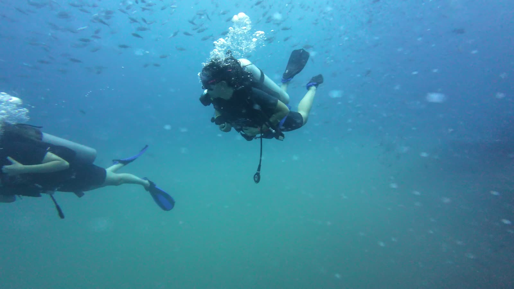

Teoría online
Tienes el e-learning de SSI desde el momento en que reservas. Regístrate desde casa y empieza a estudiar incluso antes de que empiecen tus vacaciones.

Inicio / Cursos SSI / Open Water
Aprende a bucear en tres días y llévate una titulación que te permite bucear hasta 18 metros en cualquier parte del mundo. Grupos pequeños de cuatro, nuestro propio barco desde Chaloklum y tus inmersiones en aguas abiertas en Sail Rock, el mejor punto de buceo del golfo: 12,900฿ con todo incluido.

Cuatro alumnos, un instructor
De un vistazo
SSI Open Water Diver es el curso que te convierte de alguien que ha probado el buceo en un buceador. Aprendes la teoría, practicas las habilidades en las aguas poco profundas de la bahía de Chaloklum y luego lo juntas todo en inmersiones de verdad en el golfo de Tailandia. Al terminar puedes bucear con un compañero, sin instructor, hasta 18 metros.
Cómo es el curso
Todos los cursos empiezan en las aguas poco profundas de la bahía de Chaloklum, justo delante del centro de buceo, y pasan después a inmersiones de verdad en Sail Rock. El plan exacto depende del mar y del grupo, pero esta es la idea.
Tienes el e-learning de SSI desde el momento en que reservas. Regístrate desde casa y empieza a estudiar incluso antes de que empiecen tus vacaciones.
Repaso de la teoría y después las habilidades básicas, una a una, en aguas poco profundas desde la playa, con una primera inmersión corta. Solo en piscina si el mar no lo permite.
Salimos en barco a Sail Rock. Repites las habilidades en inmersiones de verdad y empiezas a disfrutar de los peces: barracudas, peces murciélago, jureles.
Tus últimas inmersiones de formación, un poco más profundas, y después el examen final. Si el mar o el grupo lo necesitan, buceamos en Koh Ma, más tranquilo y menos profundo.
Tu titulación SSI aparece al momento en la app MySSI, reconocida en centros de buceo de todo el mundo.

Koh Ma · plan B tranquilo para los cursos
Quién puede hacerlo
No necesitas haber buceado antes ni ser un atleta. Si te sientes cómodo en el agua y tienes una salud razonable, este curso es para ti.
Por qué aprender con nosotros
Koh Phangan es más tranquila que Koh Tao, y sus puntos de buceo también. Aprender sin una multitud alrededor hace que las primeras inmersiones sean mucho más relajadas, y aun así buceas en Sail Rock, que está más cerca de nuestro muelle de Chaloklum que de cualquier otro punto de la isla.
Preguntas
12,900฿ por persona. Incluye tu instructor SSI, el e-learning, todo el equipo, los días de barco con comida y bebidas, el vídeo de tus inmersiones y tu titulación. No hay nada más que pagar.
Tres días. Antes del primer día puedes estudiar la teoría online a tu ritmo, así queda más tiempo para el agua.
Sí. SSI y PADI forman según los mismos estándares internacionales, y la titulación SSI Open Water Diver se acepta en centros de buceo de todo el mundo, también en los centros PADI.
No. Tienes que sentirte cómodo en el agua: poder nadar una distancia corta sin parar y flotar unos minutos. La velocidad no importa, y lo comprobamos juntos el primer día.
Sí, desde los 10 años. Los buceadores de 10 a 14 años obtienen la titulación SSI Junior Open Water Diver, con algunos límites de profundidad hasta que cumplen 15, cuando la tarjeta pasa a Open Water Diver completa.
Empieza con un bautismo: un día, sin titulación. Si te gusta, dínoslo y te explicamos cómo continuar con el curso Open Water. Es normal estar nervioso, y los grupos de cuatro nos dan tiempo para todos.
Las primeras habilidades se practican en la bahía de Chaloklum, en aguas poco profundas desde la playa. Preferimos el mar a la piscina: el agua salada tiene una densidad distinta a la dulce, y en la playa hay más espacio y se puede hacer una primera inmersión corta. Las inmersiones en aguas abiertas de los días dos y tres son en Sail Rock, un pináculo en mar abierto a una hora en barco. Cuando el mar o los alumnos lo necesitan, vamos a Koh Ma, un jardín de coral más tranquilo y menos profundo a diez minutos del muelle.
Bañador, toalla, protección solar y algo de abrigo para la vuelta en barco. Todo el equipo de buceo está en el barco en tu talla. Si llevas gafas y necesitas una máscara graduada, avísanos antes de llegar.
La recomendación habitual es 12 horas después de una sola inmersión poco profunda, 18 horas después de varias inmersiones o de una inmersión profunda, y 24 horas después de una inmersión con descompresión. En el curso se hacen varias inmersiones al día, así que cuenta con 18 horas. El ferry no requiere espera: volvemos al muelle hacia las 15:00, a tiempo para un ferry de las 17:00.
Mándanos tus fechas por WhatsApp y te confirmamos plaza en el próximo grupo de Open Water. Una señal reserva tu plaza; el resto se paga en efectivo o por Revolut.
¿Ya tienes titulación? Mira los siguientes cursos o ven a un Fun Dive.